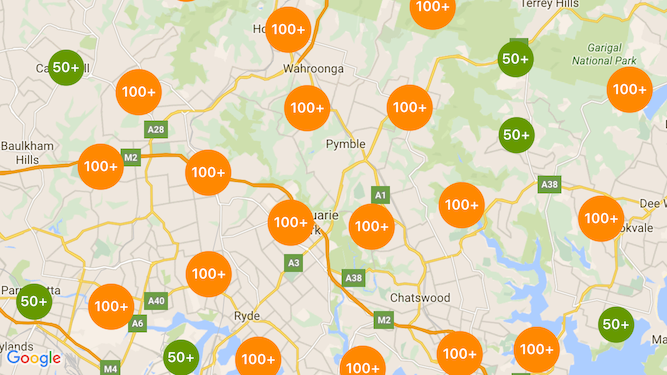

Below are a list of some my favourite projects. Feel free to browse through and if some of them peaks your intrest please check the github page, Which has more details of the project details and code!
PMNet Power map estimation - Revolutionized Cellular Applications
I developed a groundbreaking model for PowerMap estimation, drastically transforming how cellular network improvements are approached. Previously, generating path loss maps was a costly and time-consuming process, often taking days to complete. My innovative model accelerates this process, delivering highly accurate results in a matter of seconds, significantly reducing both time and computational expenses.
Explore the full project and technical details on my GitHub.


AutoML Syntetic Data Generation - Bridging the Gap Between Synthetic and Real-Life Data
We harnessed the power of Computer Vision and Reinforcement Learning to augment synthetic data, bringing it remarkably close to real-world datasets. This approach effectively addresses the challenge of real-life data scarcity, enabling more robust and accurate model training in environments where real-world data is limited.Discover the full project and methodology on my GitHub.

Gamified To Do list - Transforming Productivity
Staying on top of tasks can be exhausting, often making us want to quit. That's why we developed a full-stack website and app—a gamified to-do list that turns productivity into an engaging experience. With our platform, users can track their tasks, earn points for completing them, and redeem rewards based on their achievements. It’s designed to make tackling daily tasks less of a hassle and more like playing a game! Explore the project and experience the fun side of productivity on GitHub.
Breach Detection - Enhanced Security with Multi-Layer Facial Detection
We’ve reinforced security by integrating multi-layered detection using standard cameras, IR sensors, and thermal imaging to cross-verify the identity of individuals. This system ensures that even if one camera fails to recognize a person—due to masks, disguises, or other obstructions—an alert is triggered. By combining facial and body detection across multiple cameras, our solution provides an added layer of security, reducing the chances of unauthorized access.Learn more about the technology on GitHub.

Alergian Forest fires - Predicting Wildfires
In this project, I aimed to predict the likelihood of future fires based on weather conditions. Using a dataset with 10 features, including the date and fire indicators, I built and compared seven models: Trivial, N-means, Bayes Minimum Error Classifier, Perceptron with Sequential Gradient Descent and Scheduler, MSE LMS with Sequential Gradient Descent and Scheduler, SVM Linear Classifier, and SVM Nonlinear RBF Kernel Classifier. Alongside model development, I implemented preprocessing, feature expansion, and selection techniques to enhance performance. Check out GitHub.
Ranking the Severity of Toxic Comments Using NLP and BERT
Toxic behavior on social media, such as spreading negativity or abuse, is increasingly unacceptable. While toxicity is common on divisive topics like climate change or politics, detecting and ranking toxic comments is crucial for healthier discussions. Existing NLP methods often classify toxic comments, but this project aims to go further by ranking the severity of toxic behavior. Using BERT, a model that captures contextual embeddings, we can rank toxic comments more effectively, providing deeper insights into online interactions.Learn more on GitHub.

Battle of Clusters - City Comparison for Immigration
I conducted a comprehensive case study to compare potential cities for immigration, leveraging feature engineering and selection techniques. By utilizing Foursquare APIs, I gathered detailed data on hotspot locations such as pubs, stores, and other amenities. To visualize the findings, I created an interactive side-by-side map for the two cities using Folium, incorporating KNN for data representation and Agglomerative Clustering to enhance the user experience while zooming in and out. Curious about which city comes out on top? Discover the insights in the full project on GitHub.
Trojan Maps - Graph Algorithms Implementation
Dive into my project, where I implemented a series of advanced graph algorithms, including autocomplete functionality, shortest path calculations with Dijkstra's and Bellman-Ford algorithms, and an innovative solution to the Travelling Salesperson Problem using both brute-force and 2-opt methods. With interactive visualizations and thorough analysis, this project showcases the practical applications of C++ in solving complex algorithmic challenges. Curious to see the code and visualizations? Check it out on GitHub!
Apriori Basket Analysis
In this project, we utilized the Apriori algorithm to perform market basket analysis, a technique that identifies frequent itemsets and association rules in transaction data. We explore key concepts, methodologies, and real-world applications of the algorithm, providing valuable insights into customer purchasing patterns.Check out the project on GitHub.
Loan Payment Analysis - Predicting Creditworthiness
In this project, I developed a model to predict whether individuals will repay their loans on time by analyzing historical payment data. Through meticulous feature engineering and selection, I uncovered key patterns influencing repayment behavior. I utilized various classification algorithms, including KNN, SVM, Decision Tree, and Logistic Regression, to assess customer reliability. Intrigued by the techniques used and the insights gained? Explore the full project on GitHub to see the implementation and learn more about the journey!